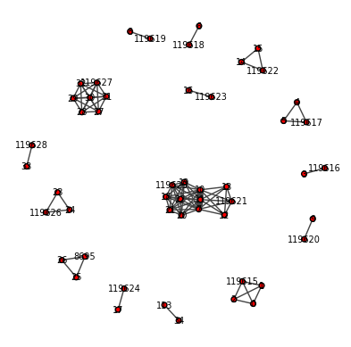
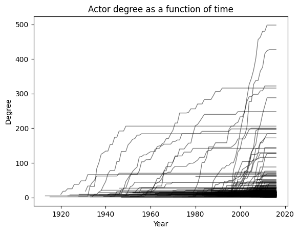
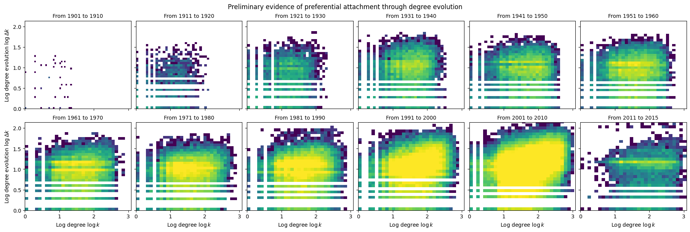
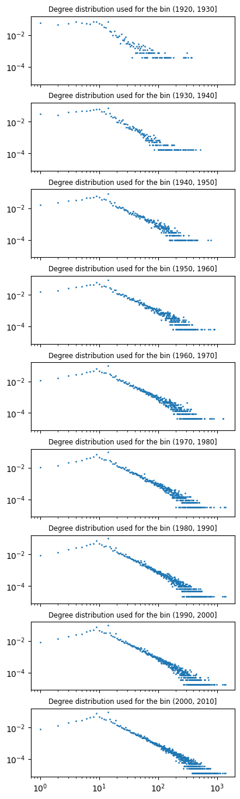
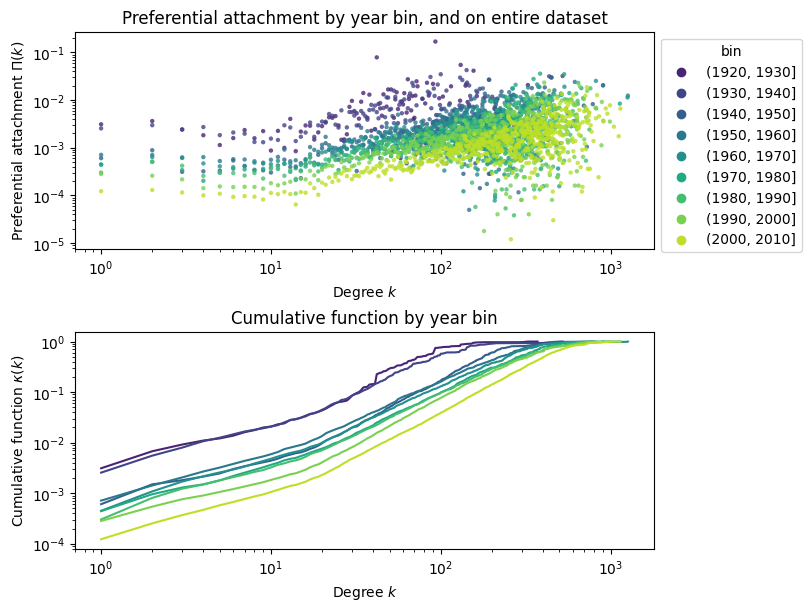
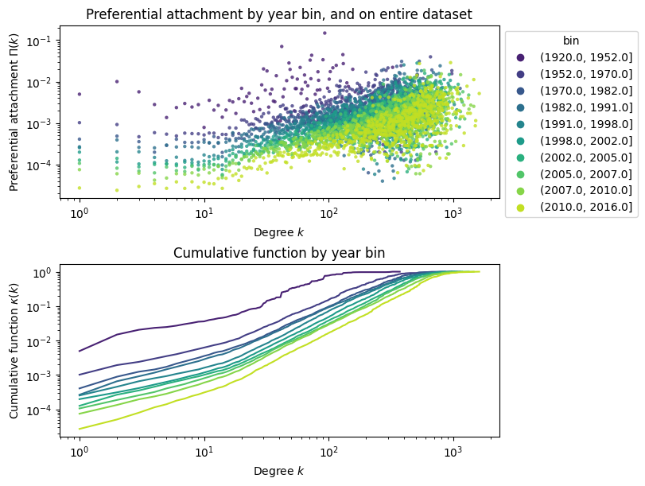
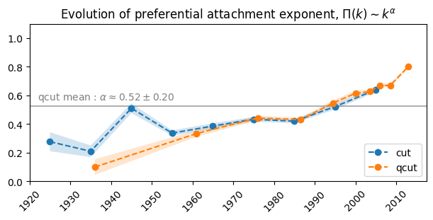
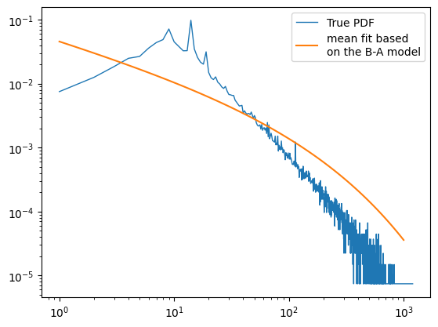
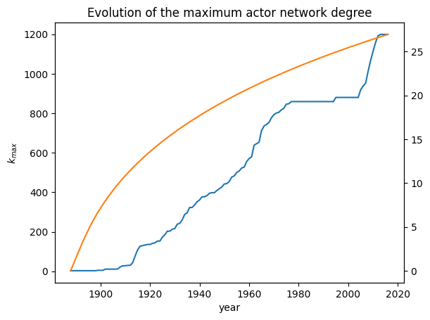
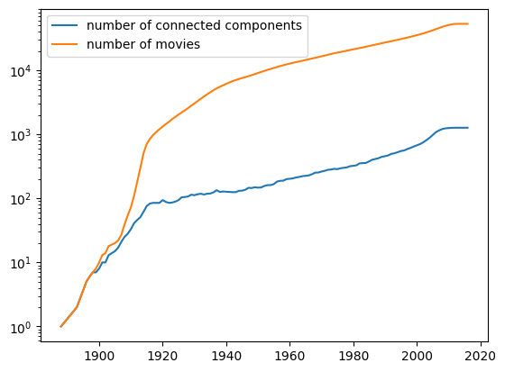

import pandas as pd
import seaborn as sns
import matplotlib.pyplot as plt, matplotlib as mpl
import numpy as np
import igraph as ig
import random
from tqdm import tqdm
import statsmodels.formula.api as smf
import itertools
import pickleAnalysis of network growth
Load data
df_edges: pd.DataFrame = pd.read_pickle('../data/generated/graph/actor_graph_full.ungrouped.pkl')
df_movies: pd.DataFrame = pd.read_pickle('../data/generated/preprocessed/movies.pkl')Prepare temporal graphs edges
df_edges['movie_release'] = df_movies.set_index('fb_id').loc[df_edges.movie_fbid].movie_release.values
df_edges.sort_values('movie_release', inplace=True)
print(f'length before purge : {len(df_edges)}')
df_edges.dropna(subset='movie_release', inplace=True) # some movies do not have dates associated to them
# df_edges.drop(index=df_edges[((df_edges.movie_release <= min(years_bins)) | (df_edges.movie_release > max(years_bins)))].index, inplace=True)
# df_edges.drop(index=df_edges[(df_edges.movie_release > 2015)].index, inplace=True)
print(f'length after purge : {len(df_edges)}')
# assert min(years_bins) < df_edges.movie_release.min()
# assert df_edges.movie_release.max() <= max(years_bins)
df_edges['movie_release_year'] = df_edges['movie_release'].map(lambda t: t.year).astype(pd.Int64Dtype())
# we bin the years together to reduce noise on the subsequent analyses
# we consider the graph at t=0 at year 1920
df_edges['year_bin'] = pd.cut(df_edges.query('movie_release_year > 1920').movie_release_year, range(1920, 2010+1, 10), precision=0)
df_edges['year_qbin'] = pd.qcut(df_edges.query('movie_release_year > 1920').movie_release_year, len(range(1920, 2010+1, 10))-1, precision=0)
df_edgeslength before purge : 2241657
length after purge : 2224839| actor1_fbid | actor2_fbid | movie_fbid | movie_release | movie_release_year | year_bin | year_qbin | |
|---|---|---|---|---|---|---|---|
| 678016 | /m/0k2pyv | /m/0k2pz0 | /m/044ggd | 1888-01-01 | 1888 | NaN | NaN |
| 678017 | /m/0k2pyv | /m/0k2pz6 | /m/044ggd | 1888-01-01 | 1888 | NaN | NaN |
| 678018 | /m/0k2pyv | /m/0k2pzd | /m/044ggd | 1888-01-01 | 1888 | NaN | NaN |
| 678019 | /m/0k2pz0 | /m/0k2pz6 | /m/044ggd | 1888-01-01 | 1888 | NaN | NaN |
| 678020 | /m/0k2pz0 | /m/0k2pzd | /m/044ggd | 1888-01-01 | 1888 | NaN | NaN |
| ... | ... | ... | ... | ... | ... | ... | ... |
| 1118305 | /m/06k6ns | /m/0fqwzd | /m/064mmw7 | 2016-06-08 | 2016 | NaN | (2009.0, 2016.0] |
| 1118306 | /m/06k6ns | /m/0fdc74 | /m/064mmw7 | 2016-06-08 | 2016 | NaN | (2009.0, 2016.0] |
| 1118307 | /m/0fdc74 | /m/0fqwzd | /m/064mmw7 | 2016-06-08 | 2016 | NaN | (2009.0, 2016.0] |
| 1118296 | /m/0736qr | /m/0fqwzd | /m/064mmw7 | 2016-06-08 | 2016 | NaN | (2009.0, 2016.0] |
| 1118302 | /m/06k6ns | /m/0g7dfl | /m/064mmw7 | 2016-06-08 | 2016 | NaN | (2009.0, 2016.0] |
2224839 rows × 7 columns
years = df_edges.movie_release_year.unique().astype(int)Model growth
We consider the initial actor network at the year 1900
https://barabasi.com/f/622.pdf
Is there preferential attachment ?
Numerical indices
We use numerical indices instead of freebase ids, in order to index into numpy arrays later
codes, uniques = pd.factorize(pd.concat([df_edges.actor1_fbid, df_edges.actor2_fbid]))
df_edges['actor1_numid'] = codes[:len(df_edges)]
df_edges['actor2_numid'] = codes[len(df_edges):]
df_edges| actor1_fbid | actor2_fbid | movie_fbid | movie_release | movie_release_year | year_bin | year_qbin | actor1_numid | actor2_numid | |
|---|---|---|---|---|---|---|---|---|---|
| 678016 | /m/0k2pyv | /m/0k2pz0 | /m/044ggd | 1888-01-01 | 1888 | NaN | NaN | 0 | 1 |
| 678017 | /m/0k2pyv | /m/0k2pz6 | /m/044ggd | 1888-01-01 | 1888 | NaN | NaN | 0 | 2 |
| 678018 | /m/0k2pyv | /m/0k2pzd | /m/044ggd | 1888-01-01 | 1888 | NaN | NaN | 0 | 119615 |
| 678019 | /m/0k2pz0 | /m/0k2pz6 | /m/044ggd | 1888-01-01 | 1888 | NaN | NaN | 1 | 2 |
| 678020 | /m/0k2pz0 | /m/0k2pzd | /m/044ggd | 1888-01-01 | 1888 | NaN | NaN | 1 | 119615 |
| ... | ... | ... | ... | ... | ... | ... | ... | ... | ... |
| 1118305 | /m/06k6ns | /m/0fqwzd | /m/064mmw7 | 2016-06-08 | 2016 | NaN | (2009.0, 2016.0] | 61010 | 52747 |
| 1118306 | /m/06k6ns | /m/0fdc74 | /m/064mmw7 | 2016-06-08 | 2016 | NaN | (2009.0, 2016.0] | 61010 | 80735 |
| 1118307 | /m/0fdc74 | /m/0fqwzd | /m/064mmw7 | 2016-06-08 | 2016 | NaN | (2009.0, 2016.0] | 80735 | 52747 |
| 1118296 | /m/0736qr | /m/0fqwzd | /m/064mmw7 | 2016-06-08 | 2016 | NaN | (2009.0, 2016.0] | 41038 | 52747 |
| 1118302 | /m/06k6ns | /m/0g7dfl | /m/064mmw7 | 2016-06-08 | 2016 | NaN | (2009.0, 2016.0] | 61010 | 74039 |
2224839 rows × 9 columns
print(f'total {uniques.nunique()} nodes (actors)')total 134649 nodes (actors)Compute degree evolution
def get_edges_year(year: int) -> pd.DataFrame:
"""Return weighted edges for all movies released before and on ``year``"""
return (df_edges
.query(f'movie_release_year <= {year}')
.groupby(['actor1_numid', 'actor2_numid'])
[['movie_fbid']]
.nunique()
.reset_index()
.rename(columns={'movie_fbid': 'movie_count'})
)
# test the function
random.seed(0) # seed the random layout
fig, ax = plt.subplots()
g0 = ig.Graph.DataFrame(get_edges_year(years[10])[['actor1_numid', 'actor2_numid', 'movie_count']], directed=False, use_vids=False)
ig.plot(g0, target=ax,
vertex_label=g0.vs['name'], vertex_label_size=7,
edge_width=g0.es['movie_count']
);
Run computation
Note : actors keep their degree even after they die !
if False: # recompute
degrees = np.zeros((uniques.nunique(), df_edges.movie_release_year.nunique()))
for iyear, year in tqdm(enumerate(years), total=len(years)):
g = ig.Graph.DataFrame(get_edges_year(year)[['actor1_numid', 'actor2_numid', 'movie_count']], directed=False, use_vids=False)
# print(g.summary())
for node, k in zip(g.vs, g.degree()):
degrees[node['name'], iyear] = k
np.savez('../data/generated/graph/network_growth/actor_graph_full_degrees.npz', degrees)
else: # load from precomputed
degrees = np.load('../data/generated/graph/network_growth/actor_graph_full_degrees.npz')['arr_0']delta_degrees = np.diff(degrees, axis=-1)# k = 0 corresponds to actors not yet born
degrees[degrees == 0] = np.nan
# Delta k = 0 corresponds to actors that don't evolve
delta_degrees[delta_degrees == 0] = np.nan# convert the data to a dataframe
df_degree = pd.DataFrame(degrees, columns=years).melt(var_name='year', value_name='k', ignore_index=False)
df_degree.dropna(inplace=True)
df_degree.reset_index(inplace=True, names='actor_numid')
df_delta_degree = pd.DataFrame(delta_degrees, columns=years[:-1]).melt(var_name='year', value_name='dk', ignore_index=False)
df_delta_degree.dropna(inplace=True)
df_delta_degree.reset_index(inplace=True, names='actor_numid')
df_pref_attachment_delta = pd.merge(df_delta_degree, df_degree, how='inner', on=['actor_numid', 'year'])df_pref_attachment_delta| actor_numid | year | dk | k | |
|---|---|---|---|---|
| 0 | 7 | 1898 | 4.0 | 1.0 |
| 1 | 12 | 1898 | 4.0 | 1.0 |
| 2 | 7 | 1901 | 6.0 | 5.0 |
| 3 | 11 | 1901 | 6.0 | 5.0 |
| 4 | 12 | 1901 | 6.0 | 5.0 |
| ... | ... | ... | ... | ... |
| 195683 | 51342 | 2015 | 1.0 | 149.0 |
| 195684 | 52861 | 2015 | 4.0 | 57.0 |
| 195685 | 61062 | 2015 | 1.0 | 114.0 |
| 195686 | 73797 | 2015 | 1.0 | 51.0 |
| 195687 | 79054 | 2015 | 1.0 | 76.0 |
195688 rows × 4 columns
Degree evolution
fig, ax = plt.subplots()
np.random.seed(0)
# we plot only 256 actors because plotting all 1.3M of them would take ages !!
ax.plot(years, degrees[np.random.randint(0, len(degrees), 256)].T, color='black', alpha=0.5, linewidth=1)
ax.set_xlabel('Year')
ax.set_ylabel('Degree')
ax.set_title('Actor degree as a function of time')
plt.show()
The degree seems to grow linearly in time, but faster when actors enter late into the graph !
See the preliminary evidence based on degree growth
fig, axs = plt.subplots(figsize=(6*3, 2*3), ncols=6, nrows=2, sharex=True, sharey=True, constrained_layout=True)
df_pref_attachment_delta['year_bin'] = pd.cut(df_pref_attachment_delta.year, range(1900, 2020+1, 10))
for (year_bin, df_pref_attachment_delta_bin), ax in zip(df_pref_attachment_delta.groupby('year_bin'), axs.flat):
# ax.plot(df_pref_attachment_delta_bin.k, df_pref_attachment_delta_bin.dk, '.', markersize=2, alpha=0.2)
ax.hist2d(
np.log10(df_pref_attachment_delta_bin.k), np.log10(df_pref_attachment_delta_bin.dk),
bins=[30,30], norm='log', vmin=1, vmax=100, cmap='viridis'
)
# NOTE : we don't use year_bin.right because then we get "From 2011 to 2020"
ax.set_title(f'From {year_bin.left+1} to {df_pref_attachment_delta_bin.year.max()}', fontsize='medium')
# ax.set_xscale('log')
# ax.set_yscale('log')
ax.set_xlabel('Log degree $\\log k$')
ax.set_ylabel('Log degree evolution $\\log \\Delta k$')
ax.label_outer()
fig.suptitle('Preliminary evidence of preferential attachment through degree evolution')
plt.show()
Preferential attachment
See also Jeong et al, 2003
We consider adding actors to the graph progressively, and not considering edges created between existing actors.
Each actor appears for the first time in a movie, and using the first movie release date we can prune the edges that do not correspond to the first addition.
We want to estimate
\(\Pi(k_i) = \frac{k_i}{\sum_j k_j} \approx \frac{\text{number of new connections to node } i}{\text{total number of new connections}}\)
- Take the distribution of edges at t0
- Add edges, and see where they connect
- The probability Pi(k) = [histogrammed probability of new connections @ k] / [histogram probability of degree distribution @ k],
- then normalize Pi(k)
- The denominator normalizes the fact high degrees are more rare, but nodes proportionally connect more to them
Note : we do not consider internal links
Add actors by batches
In order to have a good estimate, we batch edges together by movie release year, so that the probability estimate is not too noisy
cut : binning every 10 years
qcut : binning 12 quartiles
if False: # recompute
for binning_method in ['year_bin', 'year_qbin']:
g = ig.Graph.DataFrame(df_edges.query('movie_release_year <= 1920')[['actor1_fbid', 'actor2_fbid']], directed=False, use_vids=False)
pa_internal = []
pa_external = []
degree_distribution = {}
for bin, df_edges_bin in tqdm(df_edges.query('1920 < movie_release_year').groupby(binning_method, sort=False)):
degrees = g.degree()
degree_lookup = dict(zip([ v['name'] for v in g.vs ], degrees))
degree_distribution[bin] = pd.Series(degrees).value_counts(normalize=True).sort_index()
new_actors = set()
for _, edge in df_edges_bin.iterrows():
actor1_degree = degree_lookup.get(edge.actor1_fbid, 0)
actor2_degree = degree_lookup.get(edge.actor2_fbid, 0)
if actor1_degree == 0:
new_actors.add(edge.actor1_fbid)
if actor2_degree == 0:
new_actors.add(edge.actor2_fbid)
# both added at the same time. ignore
if actor1_degree == 0 and actor2_degree == 0:
continue
# external edge
if actor1_degree == 0 and actor2_degree > 0:
pa_external.append((actor2_degree, bin))
if actor1_degree > 0 and actor2_degree == 0:
pa_external.append((actor1_degree, bin))
# internal edge
if actor1_degree > 0 and actor2_degree > 0:
pa_internal.append((actor1_degree*actor2_degree, bin))
g.add_vertices(list(new_actors))
g.add_edges(zip(df_edges_bin.actor1_fbid, df_edges_bin.actor2_fbid))
df_pa_external = pd.DataFrame(pa_external, columns=['k', 'bin'])
df_pa_internal = pd.DataFrame(pa_internal, columns=['k1k2', 'bin'])
df_degree_distribution = (pd.DataFrame(degree_distribution)
.melt(var_name='bin', value_name='p_k', ignore_index=False)
.reset_index(names='k')
.dropna()
)
if True: # save to disk
df_pa_external.to_pickle(f'../data/generated/graph/network_growth/pa_external_{binning_method}.pkl')
df_pa_internal.to_pickle(f'../data/generated/graph/network_growth/pa_internal_{binning_method}.pkl')
df_degree_distribution.to_pickle(f'../data/generated/graph/network_growth/degree_distribution_{binning_method}.pkl')
df_pa_external_year_bin = pd.read_pickle('../data/generated/graph/network_growth/pa_external_year_bin.pkl')
df_pa_internal_year_bin = pd.read_pickle('../data/generated/graph/network_growth/pa_internal_year_bin.pkl')
df_degree_distribution_year_bin = pd.read_pickle('../data/generated/graph/network_growth/degree_distribution_year_bin.pkl')
df_pa_external_year_qbin = pd.read_pickle('../data/generated/graph/network_growth/pa_external_year_qbin.pkl')
df_pa_internal_year_qbin = pd.read_pickle('../data/generated/graph/network_growth/pa_internal_year_qbin.pkl')
df_degree_distribution_year_qbin = pd.read_pickle('../data/generated/graph/network_growth/degree_distribution_year_qbin.pkl')# assert the distributions are correctly normalized
assert (df_degree_distribution_year_bin.groupby('bin').p_k.sum() > 0.999).all()
assert (df_degree_distribution_year_qbin.groupby('bin').p_k.sum() > 0.999).all()# inspect dataframe
df_degree_distribution_year_bin| k | bin | p_k | |
|---|---|---|---|
| 0 | 1 | (1920, 1930] | 0.060832 |
| 1 | 2 | (1920, 1930] | 0.045526 |
| 2 | 3 | (1920, 1930] | 0.055338 |
| 3 | 4 | (1920, 1930] | 0.069859 |
| 4 | 5 | (1920, 1930] | 0.062402 |
| ... | ... | ... | ... |
| 6148 | 1117 | (2000, 2010] | 0.000012 |
| 6150 | 1143 | (2000, 2010] | 0.000012 |
| 6151 | 1233 | (2000, 2010] | 0.000012 |
| 6154 | 1339 | (2000, 2010] | 0.000012 |
| 6155 | 1387 | (2000, 2010] | 0.000012 |
3303 rows × 3 columns
for df_degree_distribution in [df_degree_distribution_year_bin, df_degree_distribution_year_qbin]:
fig, axs = plt.subplots(figsize=(4, df_degree_distribution.bin.nunique()*1.5),
nrows=df_degree_distribution.bin.nunique(), sharex=True, sharey=True, constrained_layout=True)
for (bin, df_degree_distribution_bin), ax in zip(df_degree_distribution.groupby('bin'), axs.flat):
ax.plot(df_degree_distribution_bin.k, df_degree_distribution_bin.p_k, '.', markersize=2)
ax.set_xscale('log')
ax.set_yscale('log')
ax.label_outer()
ax.set_title(f'Degree distribution used for the bin {bin}', fontsize='small')
plt.show() 

def compute_pi_kappa(df_pa_external, df_degree_distribution):
pi_external = (
df_pa_external.groupby('bin')
.k.value_counts(normalize=True) # histogram of edge connections as a function of k
.sort_index()
.rename('pi') # distribution of edge connections
)
for bin in df_pa_external.bin.unique():
# we need to divide by the distribution of edges,
# because otherwise the histogram is biased toward the more frequent degrees
pi_external[bin] /= (
df_degree_distribution.query('bin == @bin') # the distribution of degrees right before the bin of edges was added
.set_index('k').p_k
)
# normalize
pi_external[bin] /= pi_external[bin].sum()
# compute cumulative sum
kappa_external = pi_external.groupby('bin').cumsum().rename('kappa')
pi_external = pi_external.reset_index()
kappa_external = kappa_external.reset_index()
return pi_external, kappa_externalfor df_pa_external, df_degree_distribution in [(df_pa_external_year_bin, df_degree_distribution_year_bin), (df_pa_external_year_qbin, df_degree_distribution_year_qbin)]:
pi_external, kappa_external = compute_pi_kappa(df_pa_external, df_degree_distribution)
fig, axs = plt.subplots(nrows=2, figsize=(8, 6), constrained_layout=True)
sns.scatterplot(pi_external, x='k', y='pi', hue='bin', linewidth=0, alpha=0.8, s=10, palette='viridis', ax=axs[0])
sns.move_legend(axs[0], loc='upper left', bbox_to_anchor=(1, 1))
axs[0].set_ylabel('Preferential attachment $\\Pi(k)$')
axs[0].set_xlabel('Degree $k$')
axs[0].set_yscale('log')
axs[0].set_xscale('log')
axs[0].set_title('Preferential attachment by year bin, and on entire dataset')
sns.lineplot(kappa_external, x='k', y='kappa', hue='bin', palette='viridis', legend=False, ax=axs[1])
# sns.move_legend(axs[1], loc='lower right', fontsize='small')
axs[1].set_ylabel('Cumulative function $\\kappa(k)$')
axs[1].set_xlabel('Degree $k$')
axs[1].set_yscale('log')
axs[1].set_xscale('log')
axs[1].set_title('Cumulative function by year bin')
plt.show()

def compute_fitcoefs(df_kappa):
values = []
for bin, df_kappa_bin in df_kappa.groupby('bin'):
if len(df_kappa_bin) >= 2:
model = smf.ols(formula="log_kappa ~ log_k", data=dict(log_k=np.log10(df_kappa_bin.k), log_kappa=np.log10(df_kappa_bin.kappa)))
res = model.fit()
# display(res.summary())
alpha_plus_one = (res.params['log_k'], *res.conf_int().loc['log_k'])
values.append((bin, alpha_plus_one[0]-1, alpha_plus_one[1]-1, alpha_plus_one[2]-1))
else:
values.append((bin, np.nan, np.nan, np.nan))
return pd.DataFrame(values, columns=['bin', 'alpha', 'ci_lower', 'ci_upper'])fitcoefs = {
'year_bin': compute_fitcoefs(compute_pi_kappa(df_pa_external_year_bin, df_degree_distribution_year_bin)[1]),
'year_qbin': compute_fitcoefs(compute_pi_kappa(df_pa_external_year_qbin, df_degree_distribution_year_qbin)[1])
}fitcoefs{'year_bin': bin alpha ci_lower ci_upper
0 (1920, 1930] 0.276953 0.210638 0.343267
1 (1930, 1940] 0.210021 0.169118 0.250924
2 (1940, 1950] 0.510332 0.476495 0.544169
3 (1950, 1960] 0.336974 0.318484 0.355464
4 (1960, 1970] 0.386186 0.366752 0.405619
5 (1970, 1980] 0.433514 0.417537 0.449490
6 (1980, 1990] 0.419824 0.405383 0.434265
7 (1990, 2000] 0.522066 0.502441 0.541692
8 (2000, 2010] 0.639683 0.624278 0.655087,
'year_qbin': bin alpha ci_lower ci_upper
0 (1920.0, 1952.0] 0.099836 0.045346 0.154326
1 (1952.0, 1970.0] 0.333914 0.311530 0.356299
2 (1970.0, 1982.0] 0.442242 0.426329 0.458155
3 (1982.0, 1991.0] 0.431424 0.417991 0.444858
4 (1991.0, 1998.0] 0.547346 0.527997 0.566695
5 (1998.0, 2002.0] 0.614853 0.597720 0.631986
6 (2002.0, 2005.0] 0.626947 0.611793 0.642101
7 (2005.0, 2007.0] 0.670241 0.655415 0.685068
8 (2007.0, 2010.0] 0.669631 0.658343 0.680920
9 (2010.0, 2016.0] 0.801972 0.789656 0.814289}fig, ax = plt.subplots(figsize=(6, 3), constrained_layout=True)
mid_years = fitcoefs['year_bin'].bin.map(lambda x: (x.left + x.right)/2)
qmid_years = fitcoefs['year_qbin'].bin.map(lambda x: (x.left + x.right)/2)
alpha_mean, alpha_std = fitcoefs['year_qbin'].alpha.mean(), fitcoefs['year_qbin'].alpha.std()
ax.axhline(alpha_mean, alpha=0.6, color='tab:gray')
ax.annotate(f'qcut mean : $\\alpha \\approx {alpha_mean:.2f} \pm {alpha_std:.2f}$',
xy=(0.02, alpha_mean+0.02), va='bottom', xycoords=('axes fraction', 'data'), color='tab:gray')
ax.fill_between(mid_years, fitcoefs['year_bin'].ci_lower, fitcoefs['year_bin'].ci_upper, alpha=0.2)
ax.fill_between(qmid_years, fitcoefs['year_qbin'].ci_lower, fitcoefs['year_qbin'].ci_upper, alpha=0.2)
ax.plot(mid_years, fitcoefs['year_bin'].alpha, 'o--', label='cut')
ax.plot(qmid_years, fitcoefs['year_qbin'].alpha, 'o--', label='qcut')
ax.set_xticks([ int(x.left) for x in fitcoefs['year_bin'].bin ] + [ int(fitcoefs['year_bin'].bin.iloc[-1].right) ])
ax.set_xticklabels(ax.get_xticks(), rotation=45)
ax.legend(loc='lower right')
ax.set_ylim((0.0, 1.1))
ax.set_title('Evolution of preferential attachment exponent, $\\Pi(k) \\sim k^{\\alpha}$')
plt.show()
This also confirms actors do indeed grow faster as they enter later into the graph !
Degree distribution in the B-A model

def p_k_th(alpha: float, k_mean: float):
def p_k(k: np.ndarray) -> np.ndarray:
p = k**(-alpha) * np.exp(-2/(k_mean*(1-alpha)) * k**(1-alpha))
p /= p.sum()
return p
return p_kfig, ax = plt.subplots()
degrees_final = degrees[:, -1].copy()
degrees_final.sort()
pdf = pd.Series(degrees_final).value_counts(normalize=True).sort_index()
ax.plot(pdf.index, pdf.values, linewidth=1, label='True PDF')
# sns.histplot(degrees_final, log_scale=(True, True), stat='probability', label='true distribution')
# year_to_idx = { year: i for i, year in enumerate(years) }
# k_means = [ np.nanmean(degrees[:, year_to_idx[int(qmid_year)]]) for qmid_year in qmid_years ]
k = np.logspace(0, 3, 100)
sns.lineplot(x=k, y=p_k_th(fitcoefs['year_qbin'].alpha.mean(), degrees_final.mean())(k),
label='mean fit based\non the B-A model')
ax.set_xscale('log')
ax.set_yscale('log')
ax.legend()
plt.show()
Problem : the cutoff is too sharp with our fits. it looks like the true alpha is larger
-> We have not taken into account internal links
Growth of hubs

kmax = np.nanmax(degrees, axis=0)fig, ax = plt.subplots()
ax.plot(years, kmax)
ax.twinx().plot(years, np.log(years-years.min()+1)**(1/(1-0.52)), color='tab:orange')
ax.set_xlabel('year')
ax.set_ylabel('$k_{max}$')
ax.set_title('Evolution of the maximum actor network degree')
plt.show()
Growth of components
if False:
g = ig.Graph(directed=False)
total_movies = 0
components = []
for year, df_edges_year in tqdm(df_edges.groupby('movie_release_year', sort=False)):
current_actors = set([ v['name'] for v in g.vs ])
actors_from_edges = set(df_edges_year.actor1_fbid.unique()) | set(df_edges_year.actor2_fbid.unique())
new_actors = actors_from_edges - current_actors
g.add_vertices(list(new_actors))
g.add_edges(zip(df_edges_year.actor1_fbid, df_edges_year.actor2_fbid))
total_movies += df_edges_year.movie_fbid.nunique()
components.append((len(g.connected_components(mode='weak')), total_movies, year))
df_components = pd.DataFrame(components, columns=['num_connected', 'num_movies', 'year'])
if True: # save to disk
df_components.to_pickle('../data/generated/graph/network_growth/components.pkl')
else:
df_components = pd.read_pickle('../data/generated/graph/network_growth/components.pkl')100%|██████████| 122/122 [00:07<00:00, 16.77it/s]# at the start, every movie adds a new unique component, then the clusters start to appear !
fig, ax = plt.subplots()
ax.plot(df_components.year, df_components.num_connected, label='number of connected components')
ax.plot(df_components.year, df_components.num_movies, label='number of movies')
ax.set_yscale('log')
ax.legend()
plt.show()